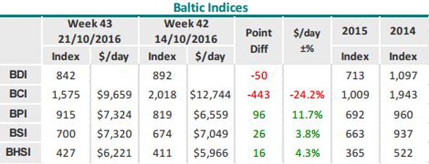
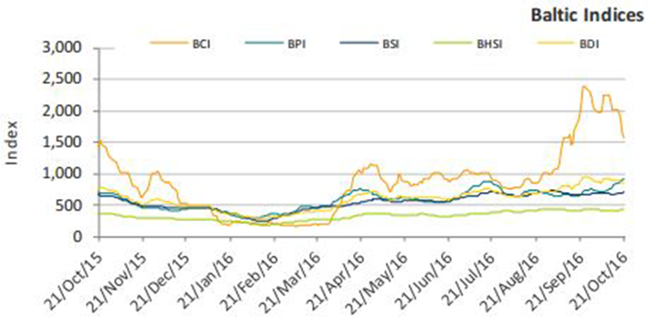

Dry bulk ship owners are still in the lookout for profits in their business. Despite the fact that rates have managed to stage a rebound over the course of the past few months and remain above operating costs level, profits are far from there yet, as most ships have to cover debt. In its latest weekly report, shipbroker Intermodal noted that “despite the fact that in most cases rates have slowly moved above OPEX levels, the way to also cover any debt and eventually make profit is still long for most shipowners. Saying that, dry bulk owners are now in a much better state compared to the first half of the year and this also justifies those who took a more aggressive approach amidst a sharply falling market and invested in second hand tonnage close –for many – to the absolute price bottom during q1 and q2 given the increase asset prices have been witnessing”.
According to Intermodal’s SnP broker, Mr. Konstantinos Kontomichis, “in the Capesize segment, the M/V Monegasque Eclat (ex – Spring Hydrangea 176k dwt 2006 Namura / Japan) was bought for $11.7m back in March and was sold for $13.5m in August, an increase of around 16%. Additionally, Stealth Maritime bought the M/V TIGERLILY (ex- C. Winner – 169k dwt 2008 Daehan / Korea) in March for a price in the region of $11.3m and sold it in August for $15.6m, an increase of 38% in just five months. Also during March, Singaporean owner Wilmar bought the M/V Ten Maru (ex-Tenshin Maru 82k 2008 Tsuneishi Zhoushan / China) for $8.0m and sold it for $11.3m a couple of weeks ago. In the Supramax sector, rumors are spreading this week that the M/V Star Manx (58k 2009 Tsuneishi Zhoushan) was sold at $12m, which is a significant premium compared to the sister vessel M/V Vinayak (ex – Caly Manx 58k 2009 Tsuneishi Zhoushan) which was sold back in June for $9.75”.
Kontomichis noted that “despite the substantial increase in asset values that took place after the end of the first half of the year though, one can say that price levels are still relatively low and despite the fact that competition among interested Buyers remains healthy, these Buyers nowadays demonstrate more resistance and do not in rush/panic buying. This is probably because they believe that a fundamental and meaningful recovery in earnings will only take place once global growth and trading start to accelerate and they are probably taking a more preservative approach which in terms of buying means; no rush. Additionally, with a number of big banks still looking at respective restructurings and private equity having distanced itself from shipping, finance still remains limited, which means that the number of “serious” Buyers is limited to those who have cash”, he said.
Intermodal’s broker concluded his analysis by saying that “the development of the fleet could also provide some support to the market. On top of any demolition activity and slippage, starting September 2017 onwards, those vessels going through their respective dry docking will have to comply with the water ballast requirements, fact which – given the cost entailed in such compliance – should expedite the removal of an additional number of older vessels from the market. The limited ordering in the dry bulk sector, which the market has been witnessing since 2015, is also a positive driver as far as a more controlled fleet development is concerned. Eight years following the onset of the shipping crisis back in 2008, it is not too optimistic to say that market fundamentals have finally started to slowly shift towards a more positive direction, motivating even the most conservative owners to start showing some interest in the second-hand market. With a more clear view ahead, those who were in a “wait and see” mode will most probably redirect themselves towards the “closely monitoring” or even the “inspection/buy” mode”.
Source: Nikos Roussanoglou, Hellenic Shipping News Worldwide


No.1 Baoyang Road, Baoshan District,Shanghai, PR China 201999

+86 21 6663 0206

info@crsa-china.com marketing@crsa-china.com


© 2016 CRSA. All rights reserved.